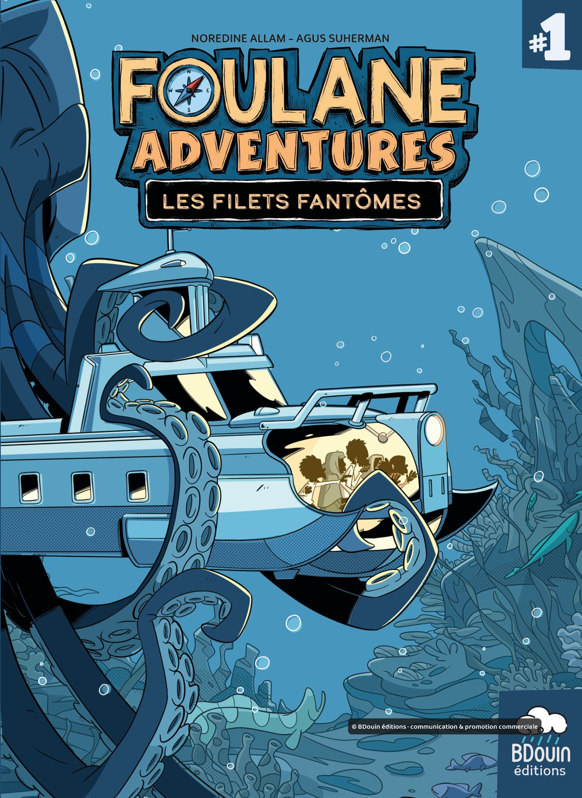

Des Picsou de notre mère à Foulane Adventures
Assalam'alaykum et bonjour,
Je poste peu ici, mais celui-ci me tenait à cœur.
Nous avons grandi avec la bande dessinée, bien avant les tablettes et les heures perdues sur les réseaux. Des comics américains (à tort), des albums franco-belges, et surtout Picsou. Les Picsou, c'est notre mère qui nous les a transmis. Les autres, on les trouvait en brocante, à petit prix.
Gamins, on n'imaginait pas qu'un jour on éditerait nous-mêmes des histoires d'aventure façon Picsou. Pourtant, dessiner et tenir une maison d'édition, c'est d'abord ça : se faire plaisir, sur le dessin comme sur le scénario.
C'est chose faite avec Foulane Adventures. Nos héros de la famille Foulane partent à l'aventure, en mer dans le tome 1, Les Filets fantômes.


Puis en Indonésie, sur le mont Botak, dans le tome 2, L'Or du mont Botak.


Au scénario, Norédine Allam. Au dessin, Agus Suherman.
Les deux tomes sont en vente depuis mercredi, et nous n'en sommes pas peu fiers.